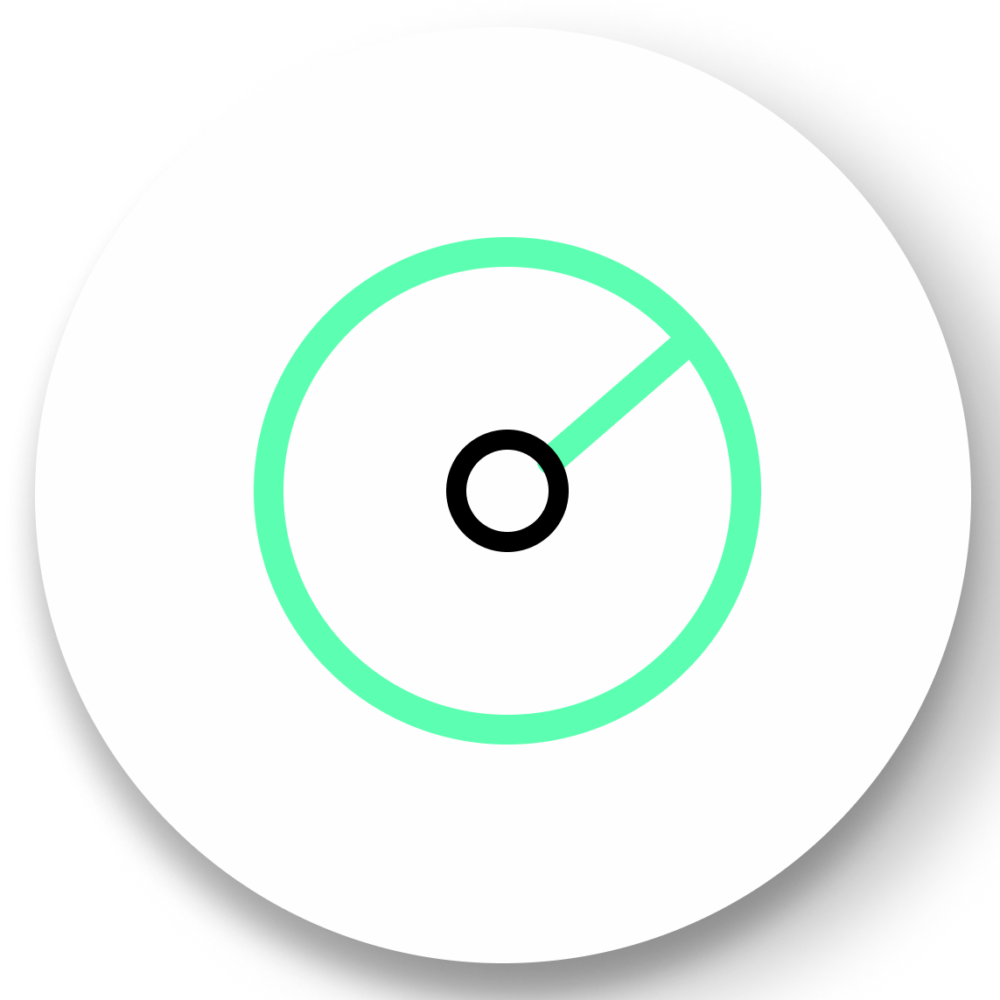

User Interface
Information Bar

Information bar is displayed at the top right corner of the screen. This is where you can find details/metadata about each dataset. There are two types of name labels, the label with bigger text is county name; another label with smaller text is municipality name.The number in white denotes the dataset id referring to datasets annotation. The other details availbale are the dataset name, time stamps, Number of points and the length of the dataset.
Measurements
{kind=link}
Measurements are performed by use of left clicking the mouse on the desired position and right clicking is needed to terminate the process. Angle, Point,Distance,Height,Circle measurement tools also can be found under the tools section in the sidebar . To remove all measurements that have been made, click on the trashbin icon or press “Escape”.
Angle

This tool measures the tridimensional angle formed by the lines connecting three points.To start a measurement, click on the angle measurement icon, then left click on three desired position and the process will be automatically completed.The result angles unit is degree. All red points are draggable to adjust their positions.
Point

This tool set a point at desired position and display its XYZ coordinate. To start a measurement, click on the point measurement icon, then click on the desired position and the process will be completed. All red points are draggable to adjust their positions.
Distance

This tool measures the tridimensional distance of the lines connecting a series of points. To start a measurement, click on the distance measurement icon and start clicking on the desired position (two or more). Right click to finish measurement. Press ‘Escape’ to remove all points. The unit of measurement is meter.
More information such as total length can also be obtained from selecting this under the scene section in the sidebar.All red points are draggable to adjust their positions.
Height

This tool measures the vertical distance between two points. To start a measurement, click on the height measurement icon and then click on the desired two positions. The process will be automatically completed. More information can also be obtained from selecting this element under the scene section in the sidebar. All red points are draggable to adjust their positions.
Circle
{kind=link}
This tool measures the radius of a circle formed by three points. To start a measurement, click on the circle measurement icon and then click on three desired positions. The process will be automatically completed. All red points are draggable to adjust their positions.
More information such as Circumference can also be obtained from selecting this element under the scene section in the sidebar.
Remove all measurements
{kind=link}
To remove all measurements has been made, click on the trashbin icon.
Navigation
{kind=link}
The default navigation mode is Earth control. Potree viewer will also save the previous selected navigation mode as the default navigation mode when the viewer is loaded next time.
Earth Control

Earth control navigated as anchored to the pointcloud. Pressing mouse left button pans the pointcloud, mouse wheel controls zoom, and right button orbits the pointcloud. Pressing “Ctrl”,the left mouse button changes the direction of the view.
Fly control
{kind=link}
Fly control moves the view as in a bird eyes controled by the keyboard. Keys “W” and “S” moves forward and backwards, respectively and in the direction of the view, while “A” and “D” moves left and right respectively.
Also, the “R” and “F” keys moves the view up and down. The mouse left button changes the direction of the view, mouse wheel controls the speed for these movements, and right button moves the view in the XYZ axis.
Screenshot
{kind=link}
Screenshot icon is used to get a screen print and save it locally. It takes screenshots without any background, but contains the result of measurements.
Point Budget Slider
{kind=link}
The point budget limits the number of points loaded and rendered at any given time, which helps to adapt performance requirements to the capabilities of different hardware. It gives you a complete version of point clouds.
Potree viewer will save the previous selected point budget as the default point budget when the viewer is loaded next time.
Display Options

The display options button is a toggle button allows users to switch between RGB and Intensity modes.
RGB
Display each point based on the object colors in 360 images.
{kind=link}
Intensity
Display each point based on the laser pulse return intensity value. Scanners identify an intensity value for each point during the capture process. Intenisity is a measure of point reflectivity, which can vary depending upon color, surface texture, surface angle and the environment.
{kind=link}
360 Images
{kind=link}
To turn on/off displaying of 360 images,click the 360images toggle button.360 Images can add meaningful context to collected data and fill in the information lacking in the point cloud.
360 Imagess allow you to see actual 360 images of the point cloud. These images are displayed as white sphere in the viewr, click on any of them to focus it. To unfocus 360 images, click right upper corner exit button or press “Escape”. Opacity slider changes the opacity of point cloud. This view will give you an overlook on how the territory looked like and what objects could be captured.